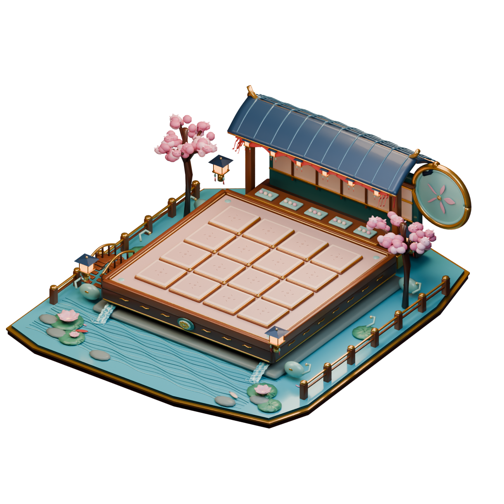
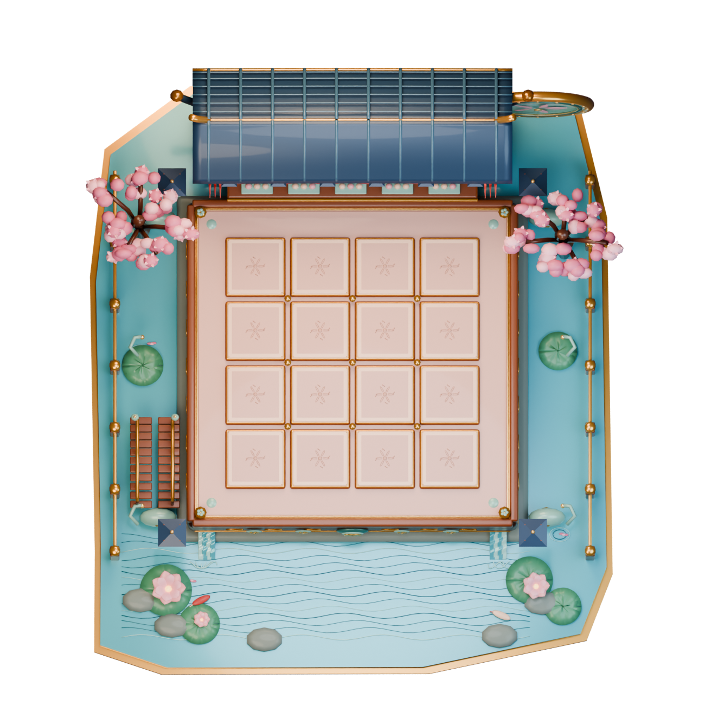
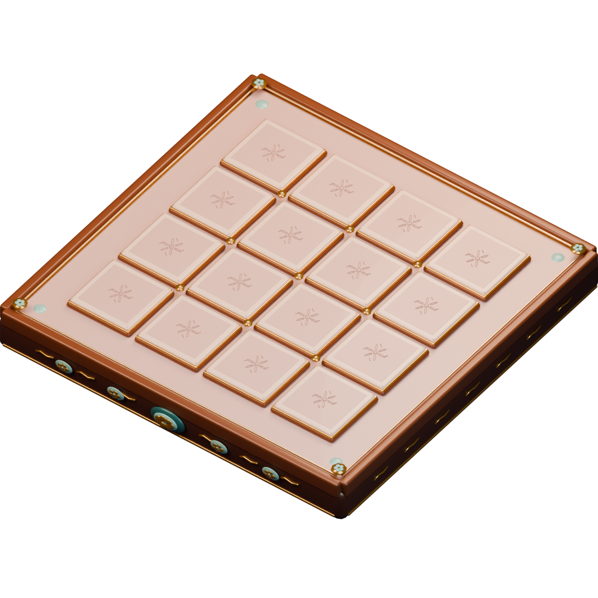

按第二张参考图制作的真实可导出微缩场景。木雕夜市、樱花、锦鲤池、莲花瀑布、青瓦商铺和月门；游戏中使用真正的 4×4 棋盘，而非概念图的格数。
4×4 · 16 个独立棋格棋盘 / 环境分离 GLB直接 Blender 制作 · 未调用 Codex手机单指旋转视角、双指缩放。展厅暂时不摆放 11 个棋子，先集中验证棋盘和环境的整体观感。
静谧 · 微光初燃
当前是基于真实棋盘 GLB 的交互演出验收页。这里的里程碑按钮模拟游戏事件； 正式接入时由局内最大合成值和连击事件驱动。长期氛围只升不降，重新开局才复位； 所有特效均不占用 4×4 棋子触控区域。音乐首次点击后才会启动。



placement.json，不把模型、文字或数字烘焙进棋格；场景装饰可整体关闭，方便低端手机使用。